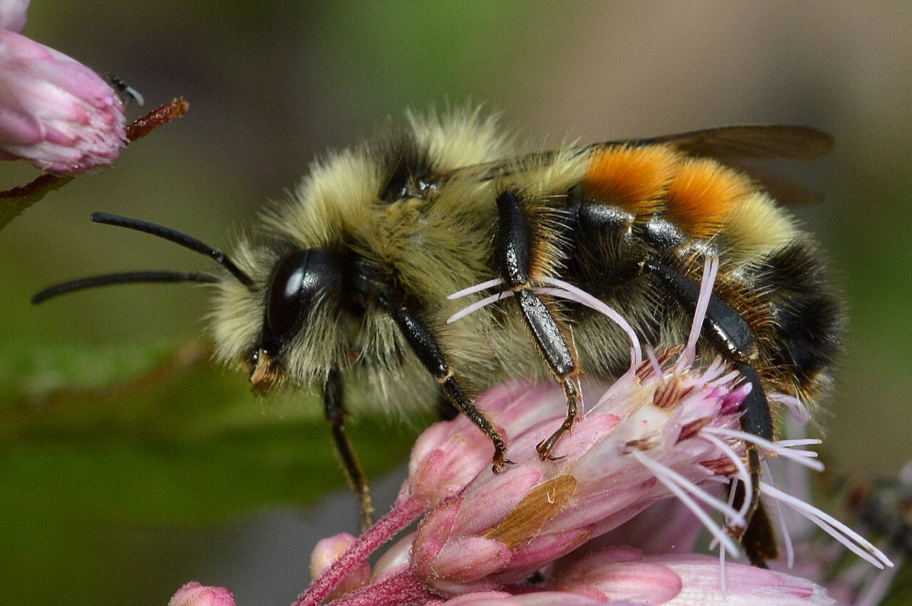
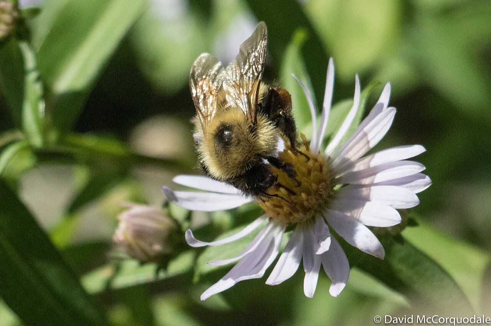

Bumble Bees
Bombus


Bumble bees are native, social bees and important pollinators of wild flowers, shrubs and fruit. The Vermont Bumble Bee Atlas (Vermont Center for Ecostudies) has mapped them since 2012.
- Also called
- Bumblebees, Bombus
- Kind
- insect
- Native to Vermont
- yes
- Legal status
- Mixed: rusty-patched bumble bee state and federally endangered (apparently extirpated); yellow-banded state threatened; American and Ashton's cuckoo state endangered; others not listed. See the table. (checked 2026-10-30)
Names
Genus Bombus. The Atlas species table lists 18 bumble bees for Vermont (see the table).
Range and habitat
Found across the state. The half-black bumble bee is described there as one of the most common species in forests. Bumble bees nest in old rodent dens, above-ground cavities in dead trees, under tussocks of dry grass and in heaps of decomposing plant matter (Landowner's Guide). They establish colonies in spring to early summer.
How to identify (by season; look-alikes and the key difference)
From the Atlas identification page:
- Photograph, do not collect: photos from several angles (a back view with the wings spread, the face and the side) give the best chance of a sure identification. Some bees cannot be identified in the field; the half-black bumble bee is not reliably identifiable in most photos; males of the parasitic cuckoo species sometimes need a microscope.
- Thorax: mostly yellow with black hairs in the middle; the black may be a shield (tricolored), a distinct dot (two-spotted), a wide bar between the wings (northern amber) or a thin line (golden northern).
- Abdomen: hair color follows the segment boundaries (terga T1 to T6). Examples: tricolored is red-yellow-red-yellow-black; common eastern has no yellow on T2; half-black has T1 and T2 yellow with the rest black; yellow-banded is black-yellow-yellow-black-black-black.
- Common look-alikes: tricolored versus red-belted (tricolored never has red on T1 and has a shield-shaped mark; red-belted has an oval mark); common eastern versus two-spotted (two-spotted always has some yellow on T2) versus brown-belted (brownish-amber arc on T2); half-black versus Sanderson's (cheek shape) and perplexing (a darker egg-yolk yellow, no black between the wings).
Through the year
Dates are typical for Vermont and shift with elevation and year; "approximate" means the source gave a season and the dates are a translation of it.
| When | What | Look for | What to do | Dates |
|---|---|---|---|---|
| Apr 1 to Oct 31 | flight (watch) | Bumble bees are on the wing: queens in spring, then workers; the flight periods the Atlas gives for common species run from April or May to September or October. | stated | |
| Jul 1 to Oct 31 | adult (watch) | Males appear from July through October (depending on species); new queens come at the end of the colony cycle. | Photograph from several angles, with the wings spread from above, to identify a bee without catching it. | stated |
Flight periods the Atlas gives for 13 species: tricolored and common eastern April to October; two-spotted and yellow-banded April to September; red-belted, brown-belted and perplexing May to September or August; half-black, northern amber and golden northern May to October; Sanderson's May to August; lemon cuckoo July to October.
Species the Atlas lists for Vermont
| Common name | Latin name | Listing (Atlas species table) |
|---|---|---|
| Black-and-gold bumble bee | Bombus auricomus | none |
| Rusty-patched bumble bee | Bombus affinis | state and federally endangered; see Rusty-patched Bumble Bee |
| Yellow-banded bumble bee | Bombus terricola | state threatened; see Yellow-banded Bumble Bee |
| Red-belted bumble bee | Bombus rufocinctus | none |
| Golden northern bumble bee | Bombus fervidus | none |
| American bumble bee | Bombus pensylvanicus | state endangered |
| Ashton's cuckoo bumble bee | Bombus ashtoni | state endangered |
| Lemon cuckoo bumble bee | Bombus citrinus | none |
| Yellowish cuckoo bumble bee | Bombus flavidus | none |
| Indiscriminate cuckoo bumble bee | Bombus insularis | |
| Two-spotted bumble bee | Bombus bimaculatus | none |
| Common eastern bumble bee | Bombus impatiens | none |
| Perplexing bumble bee | Bombus perplexus | none |
| Sanderson's bumble bee | Bombus sandersoni | none |
| Tricolored bumble bee | Bombus ternarius | none |
| Half-black bumble bee | Bombus vagans | none |
| Brown-belted bumble bee | Bombus griseocollis | none |
| Northern amber bumble bee | Bombus borealis | none |
"None" means the table shows no state or federal endangered or threatened listing; the table also carries conservation-need ratings that are not legal listings.
Signs on the land (tracks, scat, browse, nests, holes, calls)
Bees on flowers; nests are usually underground or in the cavities and heaps listed above.
Role in the forest (what it eats, what eats it, what it needs)
Pollinators of blueberry, blackberry, apple, serviceberry and many wild plants that feed bear, deer, turkey and moose (Black Bear, White-tailed Deer, Wild Turkey, Moose); 60 to 80 percent of wild plants depend on bees and other pollinators (Landowner's Guide). Food plants for the species with accounts include goldenrods, asters, willows, blueberries, roses, brambles and honeysuckles (note that bush honeysuckles are invasive: Shrub Honeysuckles).
What helps it thrive (light, soil, shelter, food and the trees it uses)
- A patchwork of habitats with flowers all season, and places to nest. Chapter 31 of the Guide (recorded in Pollinator Habitat on Forest and Field): keep forest, forest with sunny openings, wetlands and old fields with a mix of flowering plants; keep flowers on field edges, lawn edges and hedgerows; the plants bees favor include goldenrod, aster, willows, the blueberry family and dogwood, with maples, willows and apples key early in spring; leave bare or sparse, uncompacted soil, dead wood, pithy stems and slash for nests; limit pesticides, especially dusts, pellets and neonicotinoids and anything applied to flowers.
- For this group: see the table in this note for the species and their status; the Atlas notes that queens and workers are on the wing from April or May to September or October.
Managing for it (habitat practices) and living with it (conflicts and damage)
See Pollinator Habitat on Forest and Field. Bees need nest sites, winter shelter and continuous flowers through the growing season; keep dead wood and undisturbed soil; avoid pesticides on flowering plants.
Legal status
Several species are state-listed as shown in the table; the rusty-patched is also federally listed. Rules about disturbing listed species and the protection of rare, threatened and endangered species apply (Legal Checks Before a Harvest).
Sources
- Vermont Atlas of Life, Vermont Bumble Bee Species: https://val.vtecostudies.org/projects/bumble-bee-atlas/species/
- Vermont Atlas of Life, Field Guide to the Bumble Bees of VT: https://val.vtecostudies.org/projects/bumble-bee-atlas/bumble-bees-through-binoculars/
- Vermont Fish & Wildlife Department, A Landowner's Guide, chapter 31, Bees and Other Plant Pollinators: https://vtfishandwildlife.com/sites/fishandwildlife/files/documents/Learn%20More/LandownersGuide/Landowner-Guide-Complete.pdf
- Vermont Center for Ecostudies pages on bumble bees and wild bees (search summaries only): https://val.vtecostudies.org/projects/bumble-bee-atlas/about/
- Vermont Fish & Wildlife Department, A Landowner's Guide, Wildlife Habitat Management for Lands in Vermont, chapter 31 (Bees and Other Plant Pollinators): https://vtfishandwildlife.com/sites/fishandwildlife/files/documents/Learn%20More/LandownersGuide/Landowner-Guide-Complete.pdf
Vermont Woodland Owner's Reference, built 2026-11-10. Rules and dates here are summaries, not legal advice; dates shift with elevation and year. Photo and recording credits · The text is by Loop Works, CC BY 4.0 (pictures and recordings keep their own licenses)